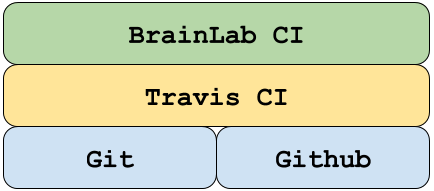

Overview¶
BrainLab-CI (BLCI) is a code and data management continuous integration tool that provides the ability to perform collaborative, community experiments with data-quality controls and full provenance. BLCI autonomously determines code base dependencies and provides infrastructure to build and manage dependencies between code and data.
Functionality¶
BLCI provides the ability to:
- Create dependency-aware pipelines that track code and data dependencies; performing autonomous updates when upstream changes occur.
- Define custom script actions to read/write and update data when
addorbuildactions are performed. See the actions page for more information. - TODO: Define verification actions used to ensure either:
- Code pushed to repo is valid for use with data.
- Data pushed to repo is valid for use with code.
- TODO: Visualize the effects of pushed code and data to the repo via dashboards.
- TODO: Autonomously perform trigger actions that read/write and update data in response to code changes.
Compatibility and Support¶
We support modern Linux and Mac operating systems and provide documentation with these in mind. BLCI (theoretically) can also run in Windows environments, but, we do not provide Windows specific documentation. We suggest Windows users take advantage of virtualization environments such as VirtualBox, VMWare to obtain Linux environments.
BLCI software stack¶

BLCI is built on the shoulders of the following systems and software: Git for local version control. Github for remote version control. Travis for a continuous integration environment.
How to not use BLCI¶
Disclaimer: Currently BLCI is not meant to be used as the primary development repo for a project. It should be used in conjunction with a primary repo where users can apply changes to the git history freely. Currently git commits performed independently of BLCI result in undefined behavior.